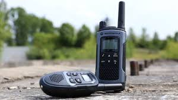
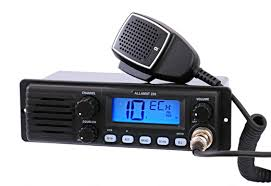
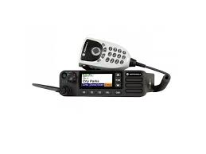
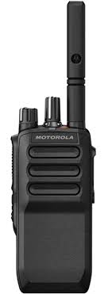

Jen velice krátce co je to RDST? RDST jsou radiokomunikační prostředky radiostanice.
Ty se dělí.
Systém základnových stanic (anglicky Base Station S(ubs)ystem, BSS) je část sítě GSM, která je zodpovědná za přenos a příjem radiových signálů z mobilního telefonu. Systém základnových stanic provádí překódování hovorových kanálů, přidělování radiových kanálů mobilním telefonům, paging a mnoho dalších úkolů patřících k radiové síti..
Radiové stanice pro vozidla (vozidlové radiostanice) slouží k zajištění spolehlivé komunikace mezi mobilními jednotkami a centrálním dispečinkem nebo jinými vozidly. Používají se například v bezpečnostních složkách, záchranných službách, dopravě či logistice. Tyto stanice se liší podle funkcí, dosahu a způsobu přenosu.
Rádio tedy přijímá rádiové vlny, dekóduje je na zvukový signál a následně je zesiluje a přehrává pomocí reproduktoru...
